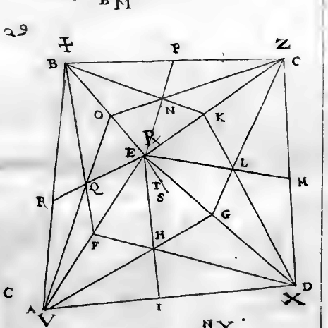

Propositio XXIV · Theorema XIII¶


PROP. XXIV. THEOR. XIII.
Sit pyramis, cuius vertex E, & basis quodlibet quadrilaterum CBAD; ductisque intra triangulum BEC, tribus rectis se inuicem secantibus in eodem puncto N, vt sunt lineae BNK, CNO, ENP, adeò vt fiat figura secundi elementi; iungantur AO, DK, & in triangulis BEA, CED perficiantur duae figurae eiusdem elementi BOEFARQ, & CKEGDML; iunctis verò lineis AG, DF secantibus sese in H producatur EH in I, & iungantur duae lineae IP, RM, vt sibi ipsis occurrant in puncto S. Demùm intelligantur intra pyramidem lineae ES, QM, HP, LR, NI; dico has secari in eodem puncto veluti T. Vt autem hoc demonstremus suspendemus, vt factum est in praecedenti, ex angulis eiusdem pyramidis quinque pondera ✠ V X Z ℞, quorum duo qualibet ad reliqua; vel duo ad duo, aut duo ad vnum, siue vnum ad vnum, vel vnum ad quatuor erunt reciprocè inter se, vt longitudines earum librarum ex quibus pendent.
(tab. 3. fig. 29) Fiat vt DG ad GE, ita pondus ℞ ad ✠, vt CK ad KE, ita ℞ ad Z, atque vt AF ad FE, ita ℞ ad V. Iam quia in quatuor singulis figuris elementi secundi, quas in superficie pyramidis, basi excepta,
f. 0050 · p. 33construximus, tria pondera adaptauimus iuxta leges secundi elementi, erit BR ad RA, vt pondus V ad ✠; CP ad PB, vt ✠ ad Z, & DM ad MC, vt Z ad X. Quare cum DI ad IA, hoc est pondus V ad X componatur ex rationibus ponderum V ad ✠ ad Z ad X, rectarum videlicet BR ad RA, CP ad PB, & DM ad MC, erit ARBPCMDIAS figura elementi quinti, cuius grauia V ✠ Z X; itaque cum in S sit centrum illorum, & in E sit graue ℞, erit in linea ES centrum grauitatis omnium grauium V ✠ Z X ℞. Rursus quia in R est centrum grauium V ✠, atque in L centrum grauium ℞ Z X, erit item in libra RL centrum omnium grauium V ✠ Z X ℞ in eadem priori positione, quod cum vnicum sit, existatque eadem ratione in libris pariter NIQMHP, necesse est, vt ad inuicem secentur omnes dictae lineae ES, LR, NI, QM, HP, in eodem puncto, veluti T, quod cum sit simul centrum earundem librarum, constat RT ad TL esse vt tria grauia Z ℞ X ad duo V ✠; IT ad TN, vt tria grauia ✠ ℞ Z ad duo V X; MT ad TQ, vt tria ✠ V ℞ ad duo Z X; HT ad TP, vt duo ✠ Z ad tria V ℞ X; & demùm ET ad TS, vt quatuor V ✠ Z X ad ℞; Reliquae verò rationes ex elementis secundo, & quinto manifestae sunt; patet ergo propositum.